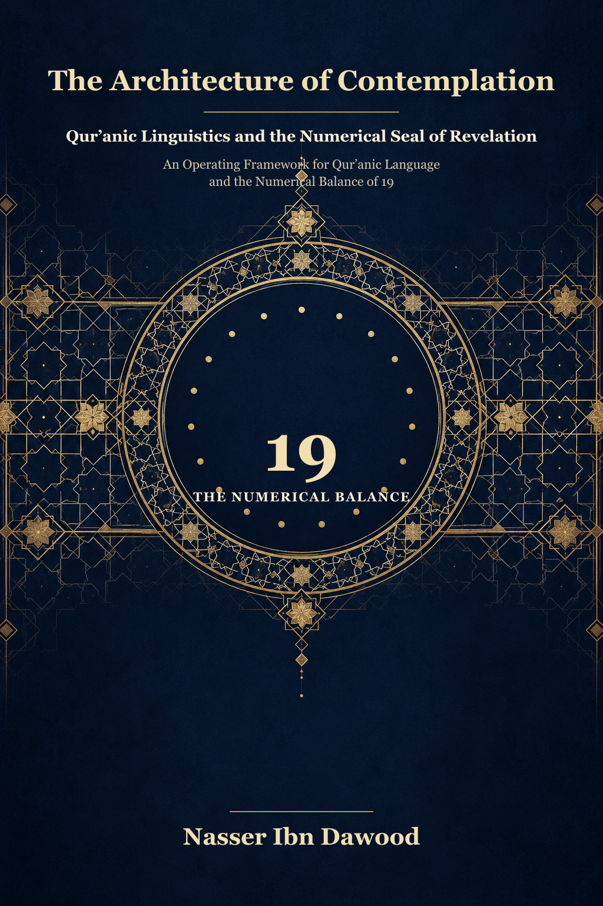

118. Engineering Reflection: Qur’anic Linguistic Inquiry and the Numerical Measure 19

A meaning-centered condensed adaptation connecting Qur’anic linguistic inquiry, structural reading, and the numerical measure 19. It distinguishes Qur’anic text, linguistic explanation, arithmetic results, and the author’s interpretive models; the Arabic manuscript remains the primary source.
This English edition is a meaning-centered condensed adaptation. The complete Arabic manuscript remains the primary source for detailed analysis.
قراءة PDF داخل الموقع / Read the PDF on this website
جارٍ تجهيز القارئ… / Preparing the reader…
Book Summary, Table of Contents & Excerpt
ENGINEERING REFLECTION
Qur’anic Linguistic Inquiry and the Numerical Measure 19
A Meaning-Centered Condensed Edition
Nasser Ibn Dawood
I. The Global Knowledge Manifesto
Knowledge is a universal right. The author firmly believes that wisdom should not be locked behind paywalls or language barriers.
Global Access Policy: All books in this library are available for free in multiple digital formats (PDF, HTML, DOCX, TXT).
The Digital Library: As of early 2026, the collection hosts 68 volumes (34 in Arabic and 34 in English), fully optimized for AI-assisted research and digital archiving.
Official Platforms: Main Website: nasserhabitat.github.io/nasser-books/ | GitHub: nasserhabitat/nasser-books
This manifesto is reproduced here as supplied by the author for this condensed edition.
II. Translator’s Note: The Bridge of Meaning
This English edition is a condensed conceptual adaptation. It is not a word-for-word translation, but rather an “extraction of essence.” It presents the core philosophical framework in accessible English, omitting the exhaustive linguistic debates and classical references found in the original Arabic text.
For the academic researcher: The original Arabic version remains the primary source for comprehensive linguistic analysis, detailed exegesis (Tafsir), and the complete bibliography.
This adaptation also preserves the methodological status of the Arabic edition. A claim marked OPEN remains open; a CANDIDATE remains a candidate; a RESISTED or STRONGLY RESISTED claim is not revived through simplification; and a CLOSED result remains closed only within its declared scope. The aim is clarity without scientific inflation.
Key Qur’anic terms are sometimes retained in transliteration—such as nafs, tawaffī, barzakh, and baʿth—when a single English equivalent would prematurely narrow the field under study.
The complete Arabic manuscript, which remains the primary source, is available here.
Status Key Used in This Adaptation
OPEN — a question or research path that remains unresolved. CANDIDATE — a proposed interpretation or pattern that requires further testing. RESISTED — a claim facing substantial counterevidence or methodological difficulty. STRONGLY RESISTED — a claim whose current support is insufficient or whose conflicts are pronounced. CLOSED — a result established only within a clearly stated scope, such as an arithmetic identity after the input values have been fixed; it does not automatically close the wider interpretive question.
III. The Project: Reading Meaning and Measure Together
Engineering Reflection brings together two strands of the author’s Qur’anic inquiry: “Qur’anic Linguistic Jurisprudence” (fiqh al-lisān al-Qur’ānī) and a numerical measure based on 19. The first asks how wording, roots, letter patterns, script, and context work together. The second assigns values to written letters under a declared table and tests selected textual units for numerical relations. The author’s central thesis is that these strands disclose an integrated design in the Qur’anic text.
The terms “operating system,” “code,” “checksum,” and “cybernetic seal” are the author’s analytical metaphors. They help describe a proposed model; they are not Qur’anic quotations. Throughout this edition, Qur’anic text, linguistic explanation, reported arithmetic, inference, and the author’s theoretical claims are kept distinct.
IV. Four Working Keys
1. Linguistic inquiry: function and non-equivalence
The project rejects complete functional synonymy as a working rule: two words may overlap in ordinary translation while differing in Qur’anic use, emphasis, or context. The researcher therefore compares occurrences rather than substituting one word for another merely because a dictionary gives similar glosses. The author calls this “non-synonymy” or the denial of exact synonymy.
The claim that every difference in form entails a distinct function is a hypothesis to be demonstrated through usage. It should be tested across the Qur’anic corpus, including counterexamples and near-synonyms. A difference in spelling alone does not establish a difference in meaning; the proposed distinction needs contextual and linguistic evidence.
2. Mithānī and the proposed semantic motion
The author uses mithānī (“paired structures”) for letter-pairs thought to carry a basic semantic focus. A third letter is then proposed to direct or qualify that focus in a root. In the example of q-ṭ, the proposed focus is cutting or separation: qaṭaʿa (“to cut”), qaṭafa (“to pluck”), and qaṭama (“to bite off”). The accompanying diagram presents this as an analytical proposal, not as a settled law of Arabic.
The reverse test is essential. Related-looking forms such as qaṭr (“copper” or “rain,” depending on form and context) may not fit a mechanical account of “separation.” The researcher must allow a hypothesis to fail, narrow its range, or remain OPEN. Context, attested usage, morphology, and competing explanations constrain any proposed semantic motion.
3. Context, qirān, and the complete question
Qirān (“joining” or “coupling”) names the practice of bringing together verses and passages that share a root, topic, or textual relation. This search builds a semantic field; it does not by itself prove that all collected passages form one closed unit. The researcher must state why each passage belongs, what contextual limits apply, and how the whole relates to neighboring material.
The term “complete issue” refers to the textual unit selected for a particular analysis. Its boundaries are methodologically decisive. The inclusion rule should therefore be stated before the calculation, and nearby alternatives should be reported. A result found only after repeatedly changing the unit remains a candidate, not a confirmation.